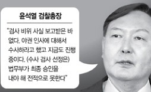

daum-logo
로그인
메일
앱
뉴스
연예
스포츠
홈
사회
정치
경제
국제
문화
IT
랭킹
연재
포토
TV
1boon
갤러리
부산
21
°C

추미애, 3개월 만에 다시 윤석열과 정면충돌..갈등 어...
서울경제
"수사 안해" vs "중상모략" 추미애-윤석열, 또다시 극한충돌
감찰·수사 지시, 라임사태 조사 급물살탈까?
세계일보
"공수 가동" "특검가자"..與野 라임공방 가열
아시아경제
김종인도 "최후의 방법"..'특검 승부수' 野 거리로 나서나
머니투데이
국민의힘, 라임·옵티 특검법 발의 예고.."특검에 맡기고 정쟁 중단"
이젠 맘껏 가겠다?..총리 퇴임 한달 만에 야스쿠니 ...
중앙일보
또 야스쿠니신사 참배한 아베 전 총리..한달 사이 두번
한겨레
日 아베 또 야스쿠니 참배.. 숨길 수 없는 우익본색
세계일보
서울 10억 아파트 거래비중↓.."규제로 강남·서초 거...
뉴시스
서울 10억대 아파트 거래, 강남·서초 줄고 마포·성동 늘었다
뉴스1
고가주택 규제 강화하자..서울 10억 이상 매매비중 '꺾였다' 아시아경제